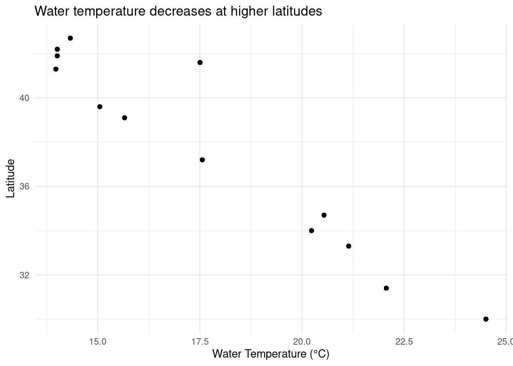
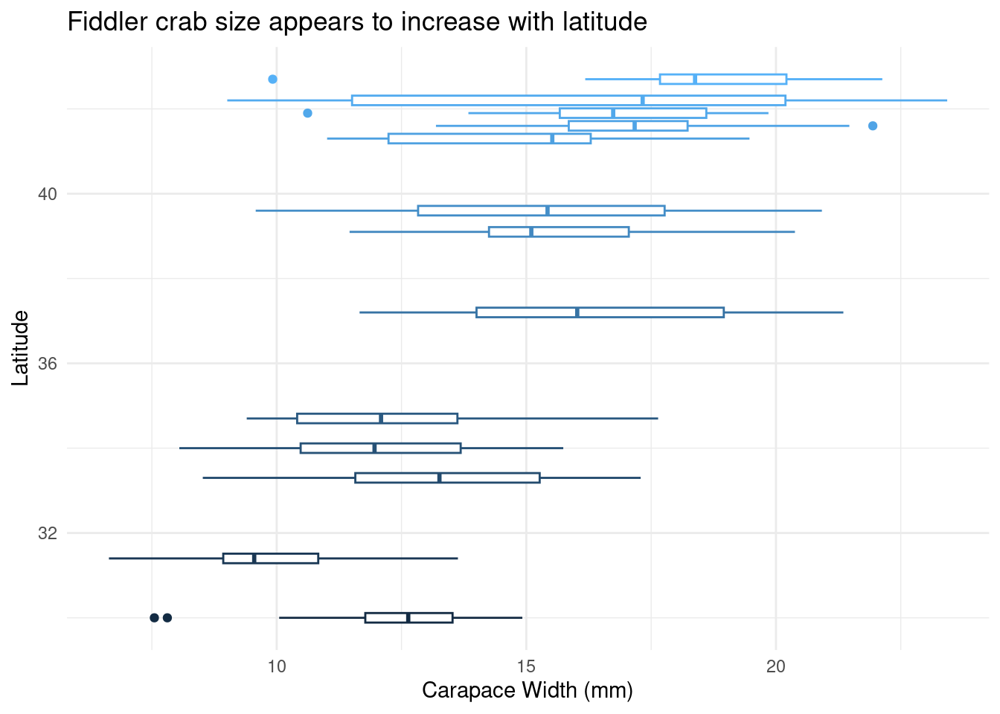
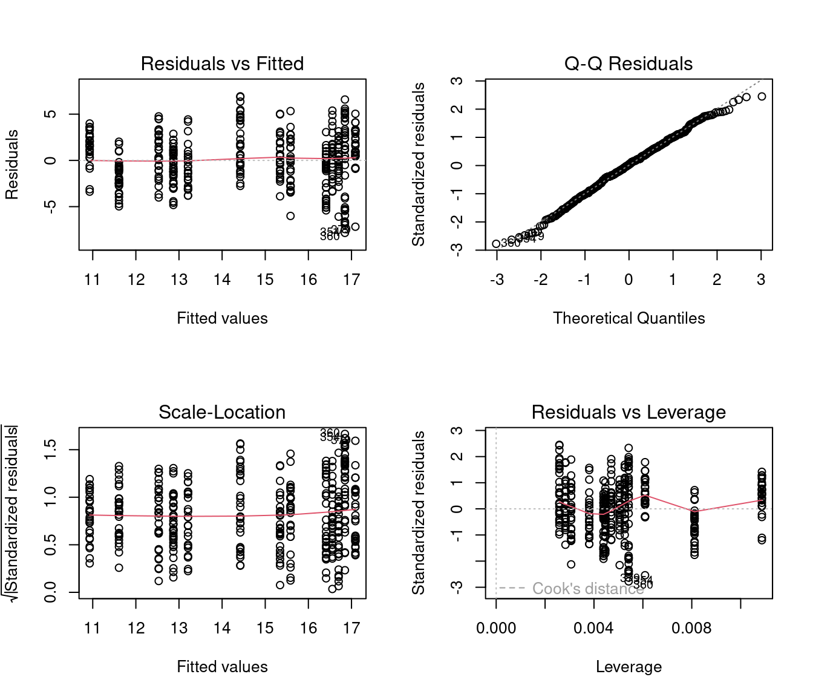

library(lterdatasampler) # Contains the pie_crab dataset
library(tidyverse) # For data manipulation and visualization
library(broom) # For tidy model outputsHow to Structure Your Code for Statistical Consultations
Keywords
Allen Bush-Beaupré, ecological statistics, agricultural entomology, integrated pest management, Bayesian statistics, statistical consulting, GLMM, R programming, Université de Sherbrooke, CREUS
Introduction
This document provides a template for structuring your R code when sharing analyses for statistical consultation. A well-organized document helps me understand your research question, data, and analysis quickly, allowing me to provide better feedback.
Key Elements of Good Code Structure:
- Clear introduction stating your research question
- Load packages at the beginning
- Data exploration before analysis
- Commented code explaining your thinking
- Interpret results in plain language
What are Quarto and R Markdown?
Quarto and R Markdown are document formats that combine text (like a Word document) with executable R code. They’re perfect for reproducible analyses because:
- Your code and explanations live in the same document
- You can re-run analyses with one click
- Outputs (plots, tables, statistics) are automatically updated
- You can share as HTML, PDF, or Word documents
Quarto vs R Markdown - Which Should I Use?
Both work great! The main differences:
- R Markdown (.Rmd): The older, well-established format - requires
rmarkdownpackage - Quarto (.qmd): The newer format - works with R, Python, Julia, and more - doesn’t require extra R packages
For consultations, either format is fine! Use whichever you’re comfortable with.
How to Create a Quarto/R Markdown Document
In RStudio:
- File → New File → Quarto Document (or R Markdown)
- Give it a title and author
- Choose HTML as output format
- Click “Create”
How to Render to HTML
Once you’ve written your document, you need to “render” it to create the HTML output:
Method 1: Click the Render/Knit button - Quarto: Click the “Render” button at the top of the editor - R Markdown: Click the “Knit” button at the top of the editor
Method 2: Use the console
# For Quarto documents (.qmd)
quarto::quarto_render("your_file.qmd")
# For R Markdown documents (.Rmd)
rmarkdown::render("your_file.Rmd")Method 3: Use the terminal
# For Quarto documents
quarto render your_file.qmdWhat to Send Me
When sharing your analysis for consultation, please send me both:
- The source file (.qmd or .Rmd) - so I can see your code
- The rendered HTML (.html) - so I can view your results without running the code
This way, I can review your outputs and dive into your code if needed!
Basic Document Structure
Here’s a minimal template to get you started:
---
title: "My Analysis Title"
author: "Your Name"
date: "2026-01-12"
format: html
---
## Introduction
What is your research question?
## Load Packages
```{r}
library(tidyverse)
```
## Load Data
```{r}
my_data <- read_csv("data.csv")
```
## Analysis
```{r}
# Your analysis code here
```
## Results
What do your results mean?Example: Fiddler Crab Analysis
Let’s explore whether fiddler crabs follow Bergmann’s Rule - the pattern where organisms at higher latitudes are larger than those at lower latitudes.
Research Question
Do Atlantic marsh fiddler crabs (Minuca pugnax) show larger body sizes at higher latitudes along the US Atlantic coast?
Load Required Packages
Load and Explore the Data
# View the first few rows
head(pie_crab)# A tibble: 6 × 9
date latitude site size air_temp air_temp_sd water_temp water_temp_sd
<date> <dbl> <chr> <dbl> <dbl> <dbl> <dbl> <dbl>
1 2016-07-24 30 GTM 12.4 21.8 6.39 24.5 6.12
2 2016-07-24 30 GTM 14.2 21.8 6.39 24.5 6.12
3 2016-07-24 30 GTM 14.5 21.8 6.39 24.5 6.12
4 2016-07-24 30 GTM 12.9 21.8 6.39 24.5 6.12
5 2016-07-24 30 GTM 12.4 21.8 6.39 24.5 6.12
6 2016-07-24 30 GTM 13.0 21.8 6.39 24.5 6.12
# ℹ 1 more variable: name <chr># Check structure
str(pie_crab)tibble [392 × 9] (S3: tbl_df/tbl/data.frame)
$ date : Date[1:392], format: "2016-07-24" "2016-07-24" ...
$ latitude : num [1:392] 30 30 30 30 30 30 30 30 30 30 ...
$ site : chr [1:392] "GTM" "GTM" "GTM" "GTM" ...
$ size : num [1:392] 12.4 14.2 14.5 12.9 12.4 ...
$ air_temp : num [1:392] 21.8 21.8 21.8 21.8 21.8 ...
$ air_temp_sd : num [1:392] 6.39 6.39 6.39 6.39 6.39 ...
$ water_temp : num [1:392] 24.5 24.5 24.5 24.5 24.5 ...
$ water_temp_sd: num [1:392] 6.12 6.12 6.12 6.12 6.12 ...
$ name : chr [1:392] "Guana Tolomoto Matanzas NERR" "Guana Tolomoto Matanzas NERR" "Guana Tolomoto Matanzas NERR" "Guana Tolomoto Matanzas NERR" ...# Summary statistics
summary(pie_crab) date latitude site size
Min. :2016-07-24 Min. :30.00 Length:392 Min. : 6.64
1st Qu.:2016-07-28 1st Qu.:34.00 Class :character 1st Qu.:12.02
Median :2016-08-01 Median :39.10 Mode :character Median :14.44
Mean :2016-08-02 Mean :37.69 Mean :14.66
3rd Qu.:2016-08-09 3rd Qu.:41.60 3rd Qu.:17.34
Max. :2016-08-13 Max. :42.70 Max. :23.43
air_temp air_temp_sd water_temp water_temp_sd
Min. :10.29 Min. :6.391 Min. :13.98 Min. :4.838
1st Qu.:12.05 1st Qu.:8.110 1st Qu.:14.33 1st Qu.:6.567
Median :13.93 Median :8.410 Median :17.50 Median :6.998
Mean :15.20 Mean :8.654 Mean :17.65 Mean :7.252
3rd Qu.:18.63 3rd Qu.:9.483 3rd Qu.:20.54 3rd Qu.:7.865
Max. :21.79 Max. :9.965 Max. :24.50 Max. :9.121
name
Length:392
Class :character
Mode :character
Data Exploration: Visualize Relationships
Before running statistical tests, always visualize your data!
Relationship between latitude and water temperature
ggplot(data = pie_crab, aes(x = water_temp, y = latitude)) +
geom_point() +
labs(x = "Water Temperature (°C)",
y = "Latitude",
title = "Water temperature decreases at higher latitudes") +
theme_minimal()
Crab size distribution by latitude
ggplot(data = pie_crab, aes(x = size, y = latitude, group = latitude)) +
geom_boxplot(aes(color = latitude)) +
labs(x = "Carapace Width (mm)",
y = "Latitude",
title = "Fiddler crab size appears to increase with latitude") +
theme_minimal() +
theme(legend.position = "none")
Observation: The boxplots suggest that crab size increases at higher latitudes, consistent with Bergmann’s Rule.
Statistical Analysis
Simple Linear Regression
Testing if latitude predicts crab size:
# Fit the model
crab_model <- lm(size ~ latitude, data = pie_crab)
# View results
summary(crab_model)
Call:
lm(formula = size ~ latitude, data = pie_crab)
Residuals:
Min 1Q Median 3Q Max
-7.8376 -1.8797 0.1144 1.9484 6.9280
Coefficients:
Estimate Std. Error t value Pr(>|t|)
(Intercept) -3.62442 1.27405 -2.845 0.00468 **
latitude 0.48512 0.03359 14.441 < 2e-16 ***
---
Signif. codes: 0 '***' 0.001 '**' 0.01 '*' 0.05 '.' 0.1 ' ' 1
Residual standard error: 2.832 on 390 degrees of freedom
Multiple R-squared: 0.3484, Adjusted R-squared: 0.3467
F-statistic: 208.5 on 1 and 390 DF, p-value: < 2.2e-16# Tidy output (optional but nice!)
tidy(crab_model)# A tibble: 2 × 5
term estimate std.error statistic p.value
<chr> <dbl> <dbl> <dbl> <dbl>
1 (Intercept) -3.62 1.27 -2.84 4.68e- 3
2 latitude 0.485 0.0336 14.4 3.60e-38Model Diagnostics
Always check your model assumptions!
par(mfrow = c(2, 2)) # 2x2 plot layout
plot(crab_model)
Results Interpretation
# Extract key statistics
model_stats <- glance(crab_model)
coef_stats <- tidy(crab_model)
# Print in plain language
cat("Model Results:\n")Model Results:cat("- Slope:", round(coef_stats$estimate[2], 3), "mm per degree latitude\n")- Slope: 0.485 mm per degree latitudecat("- P-value:", format(coef_stats$p.value[2], scientific = TRUE), "\n")- P-value: 3.602897e-38 cat("- R-squared:", round(model_stats$r.squared, 3), "\n")- R-squared: 0.348 Interpretation: For each 1-degree increase in latitude, crab carapace width increases by approximately 0.49 mm on average (p < 0.001). Latitude explains about 35% of the variation in crab size. This supports Bergmann’s Rule for this species.
Conclusions
- Fiddler crabs show larger body sizes at higher latitudes along the US Atlantic coast
- The relationship is statistically significant (p < 0.001)
- However, latitude only explains ~35% of size variation - other factors likely matter
- Model diagnostics look reasonable (residuals appear normally distributed)
Next Steps (Optional)
If I were to extend this analysis, I would:
- Test for non-linear relationships (e.g., quadratic terms)
- Include water temperature as a predictor
- Check for site-level effects (mixed models)
- Examine if the temperature-size rule applies